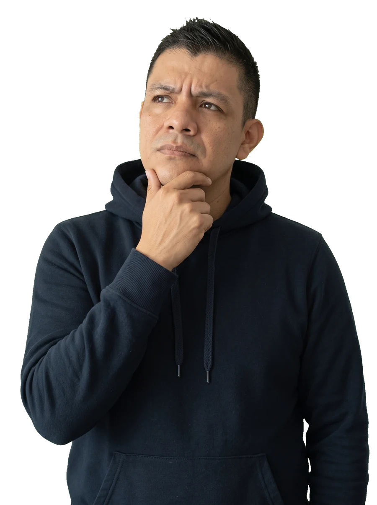

“Si solo tengo sueldo, ¿tengo que declarar?”Depende.
Así llega casi siempre la duda. Aquí te decimos de qué depende, con números: una duda, un video, cada semana.
Lo que te preguntas, resuelto en un video.
SAT
Tus trámites, sin perderte en el portal.
RFC y e.firma · Constancia de situación fiscal · Buzón tributario y cartasTu declaración
La anual, sin sorpresas.
Obligación · Deducciones personales · Saldos a favorTus números
Lo que entra, lo que sale y lo que te queda.
Ingresos extra · Finanzas sanas · Estados financieros básicos¿Cuánto te regresa una deducción?
Menos de lo que crees. Muévele, no te pedimos nada.
Si deduces al año y tu tasa más alta es , te regresan, más o menos, $4,272.
Doctor, dentista, seguro de gastos médicos, lentes. Tasas de la tarifa anual del artículo 152 de la LISR; las deducciones tienen topes y requisitos: es un ejemplo, cada caso tiene sus detalles.
Una duda, un video.
Como una consultoría, cada semana y sin costo. Cada video arranca con la pregunta tal cual y la contesta completa.
- Cuándo sí estás obligado (y cuándo no)El monto que lo cambia todo, dos patrones a la vez y qué pasa si te sale a pagar.
- Deducciones: cuánto te regresan de verdadCada peso que deduces no te regresa un peso. Lo hacemos con números.
- Sueldo y algo másIntereses, Sofipo, casa de bolsa o una herencia: cuándo se suman y cuándo no.
Lo que viene: aguinaldo, tus inversiones, tu anual.
Lo que más me preguntan.
¿Por qué pagamos impuestos?
Porque así se paga lo que es de todos: escuelas, hospitales, carreteras. La Constitución dice que contribuimos de forma proporcional: quien gana más, paga más. Por eso el ISR sube por escalones, y la parte de tu ingreso que pasa de cierto nivel paga una tasa más alta.
¿Por qué me retienen si no le debo nada a nadie?
Retener es cobrar por adelantado a nombre del SAT. Tu patrón, tu banco o la empresa a la que le cobras separan una parte y se la mandan al SAT por ti. No es un impuesto extra: es un anticipo, y en tu declaración anual se resta de lo que te toca.
¿Por qué hay gastos que no puedo pagar en efectivo?
Porque el SAT necesita poder seguir el dinero. Tus deducciones personales (doctor, dentista, hospital, entre otras) solo cuentan si las pagas con tarjeta, transferencia o cheque nominativo. Pagadas en efectivo, la factura no te sirve aunque la tengas.
¿Qué pasa si tenía que presentar una declaración y no lo hice?
Puede haber multa por cada declaración, recargos si había impuesto a pagar y tu opinión de cumplimiento en negativo. Y si te tocaba saldo a favor, sin la declaración ese dinero se queda en el SAT. Si te pones al corriente antes de que el SAT te lo pida, por lo general no hay multa.
Si mi compañero gana lo mismo que yo, ¿por qué a él le devuelven y a mí no?
Casi nunca es trampa. Lo más común es que él pidió factura de sus gastos médicos, los pagó con tarjeta y los dedujo. Otras razones: tener dos patrones a la vez, otros ingresos como intereses, o dejar el trabajo antes de diciembre.
Qué hacer con el SAT, mes por mes.
Una guía gratis para no fallar con el SAT, para pegar en el refri.
Trae: los impuestos sin rodeos, el calendario de 12 meses y el checklist para palomear.

Aquí resuelvo las dudas que más me traen mis clientes, para que tú las resuelvas sin pagar una consulta.
Israel Castro, contador público y socio de S & I Castro Consultores, el despacho familiar.
Aprende con nosotros… o déjalo en nuestras manos.
Ir al despacho